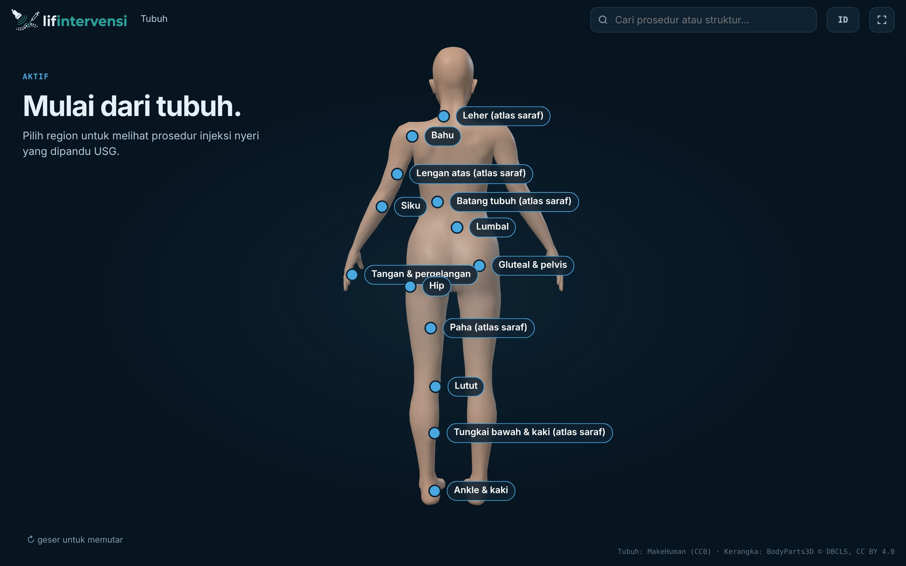
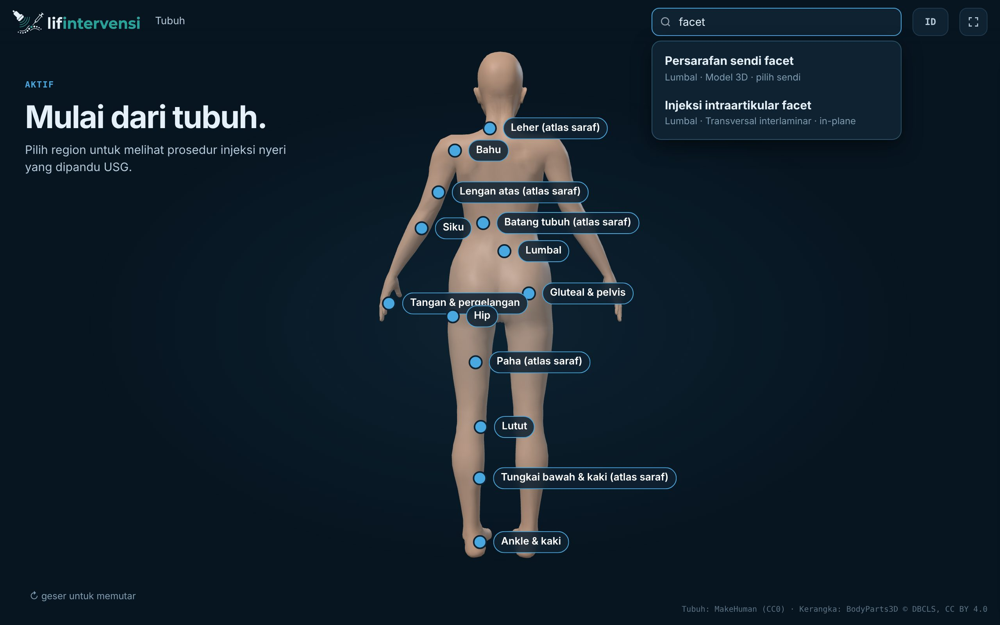
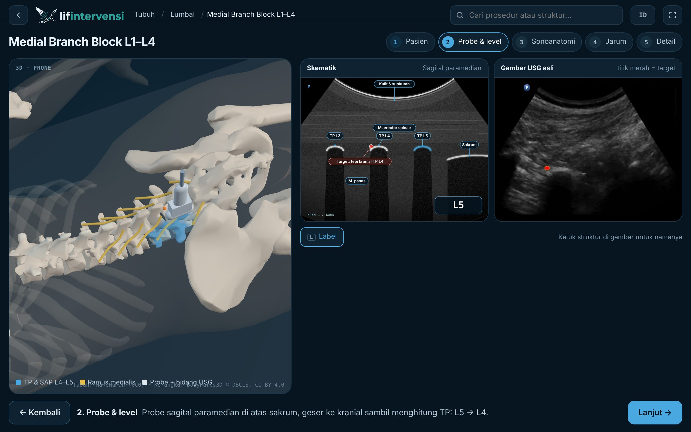
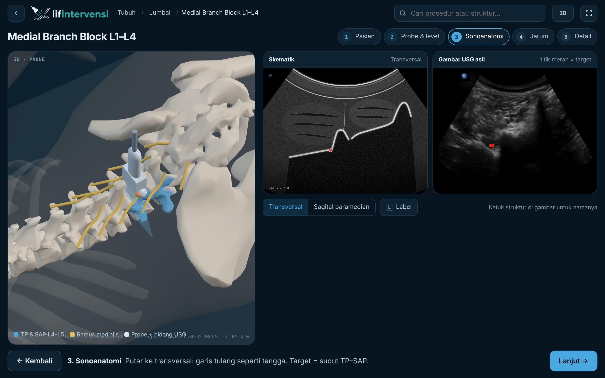
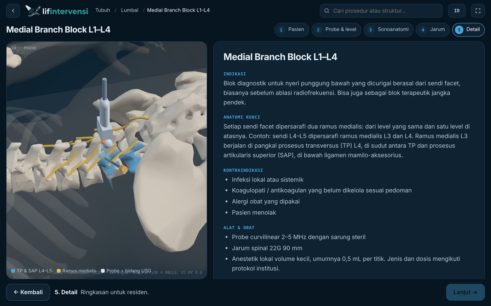
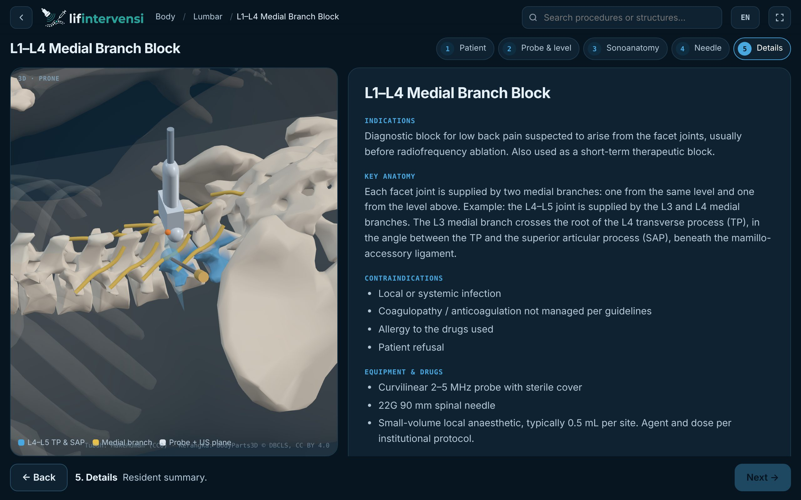
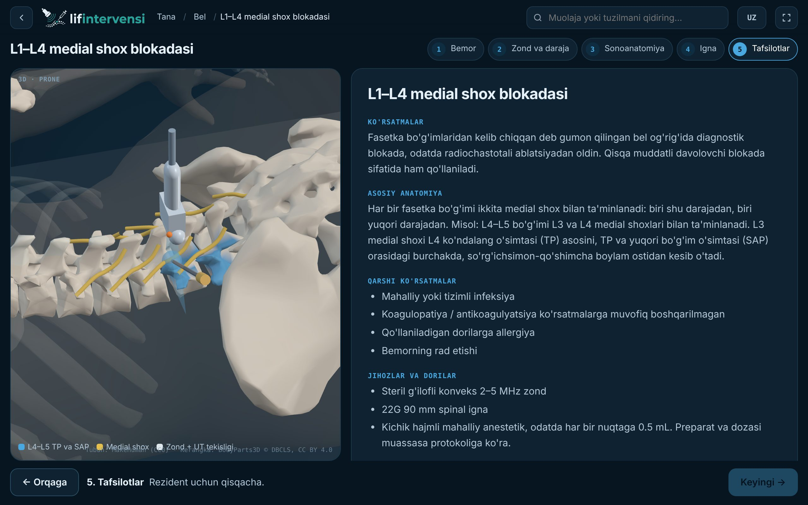

| Judul ciptaan | Lif Intervensi — Atlas Injeksi Nyeri Dipandu USG |
| Jenis ciptaan | Program Komputer |
| Lampiran | Tata Letak Tampilan (Layout) |
| Pencipta | [Nama Pencipta] |
| Pemegang hak cipta | [Nama Pemegang Hak Cipta] |
| Tanggal & tempat pertama kali diumumkan | [Tanggal], [Kota] |
| Bentuk program | Aplikasi web satu halaman (single-page web application) dalam satu berkas index.html; berjalan di peramban (browser) desktop maupun ponsel tanpa instalasi |
| Bahasa pemrograman | HTML5, CSS3, JavaScript (ECMAScript 2020), SVG, WebGL melalui pustaka three.js |
Lif Intervensi memakai tema gelap agar gambar USG dan model 3D tampak kontras, seperti layar mesin USG. Tata letak terdiri atas tiga tampilan utama: Beranda (model tubuh 3D), Panel Region (daftar prosedur per bagian tubuh) dan Halaman Prosedur (panduan lima langkah). Tampilan menyesuaikan diri untuk layar desktop dan ponsel.
| Unsur | Spesifikasi |
|---|---|
| Warna dasar | Biru gelap #071520 (latar), #0F2231 (panel), garis #1E394B |
| Warna aksen | Biru #4AA8E0 (tombol aktif, tautan); kuning #E6C04A (saraf); merah #F2938C (target); hijau #6EDE8A (status siap) |
| Huruf | Inter (teks), IBM Plex Mono (label teknis, nomor langkah); fallback huruf Cina sistem |
| Sudut & bayangan | Kartu dan panel membulat 14 px; tombol ikon 36 × 36 px membulat 10 px |
| Topbar (semua tampilan) | Tinggi 56 px: tombol kembali (muncul bila perlu), logo, breadcrumb, kotak pencarian, pemilih bahasa (ID/EN/中文/UZ), tombol layar penuh |


Kotak pencarian di topbar menampilkan daftar hasil di bawahnya (maksimal 8). Setiap hasil memuat nama prosedur, region dan ringkasan pendekatan.


Panel kanan terbagi dua: Skematik (sonogram buatan berlabel) dan Gambar USG asli (titik merah = target). Pada model 3D tampil probe dan bidang pindai berwarna biru.

Label struktur (kulit, fascia, otot, prosesus, target) tampil di atas sonogram skematik. Di bawahnya terdapat tombol pemilih bidang (Transversal / Sagital paramedian), tombol L Label, dan petunjuk “Ketuk struktur di gambar untuk namanya”.


Jarum dianimasikan pada sonogram skematik dan model 3D. Tombol N “Ulangi” memutar ulang animasi.

Panel kanan memuat ringkasan prosedur: indikasi, anatomi kunci, kontraindikasi, alat & obat, serta urutan langkah. Tombol “Lanjut” nonaktif karena ini langkah terakhir.



Seluruh teks antarmuka, nama prosedur, label sonogram dan isi langkah mengikuti bahasa yang dipilih pada pemilih bahasa di topbar.


Pada layar sempit (≤ 860 px) kotak pencarian disembunyikan, panel region muncul dari bawah layar, dan halaman prosedur disusun satu kolom yang dapat digulir dengan kaki halaman (Kembali / Lanjut) tetap di bawah.